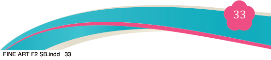
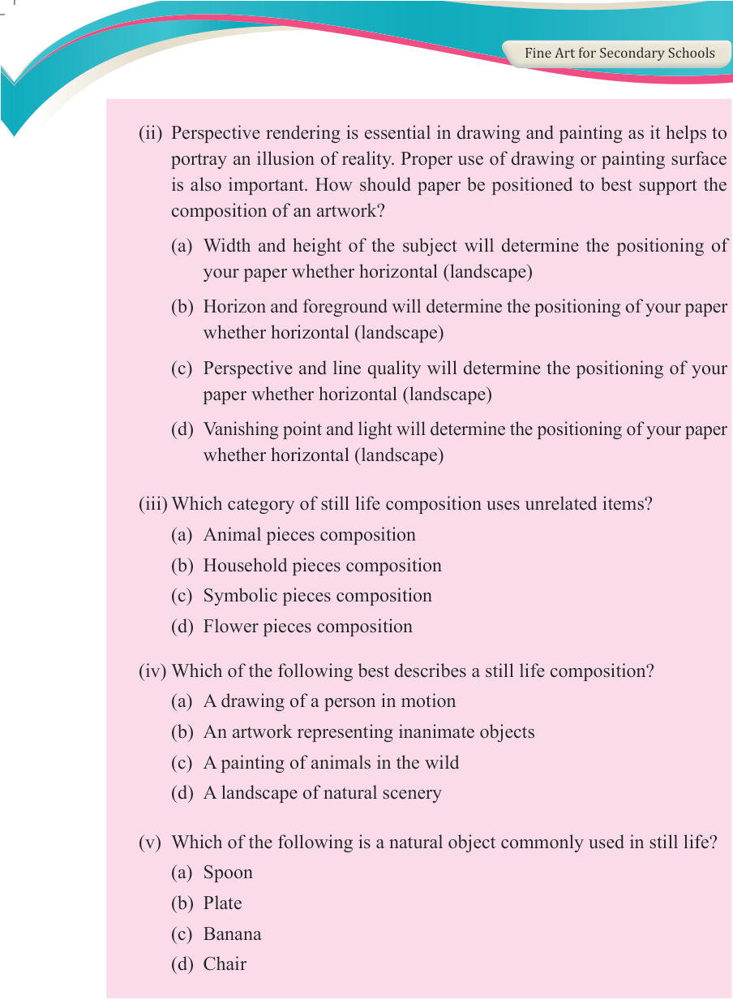

Fine Art for Secondary Schools

33


Student’s Book Form Two

(ii) Perspective rendering is essential in drawing and painting as it helps to

portray an illusion of reality. Proper use of drawing or painting surface is also important. How should paper be positioned to best support the composition of an artwork?
(a) Width and height of the subject will determine the positioning of your paper whether horizontal (landscape)
(b) Horizon and foreground will determine the positioning of your paper whether horizontal (landscape)
(c) Perspective and line quality will determine the positioning of your paper whether horizontal (landscape)
(d) Vanishing point and light will determine the positioning of your paper whether horizontal (landscape)
(iii) Which category of still life composition uses unrelated items?
(a) Animal pieces composition
(b) Household pieces composition
(c) Symbolic pieces composition
(d) Flower pieces composition
(iv) Which of the following best describes a still life composition?
(a) A drawing of a person in motion
(b) An artwork representing inanimate objects
(c) A painting of animals in the wild
(d) A landscape of natural scenery
(v) Which of the following is a natural object commonly used in still life?
(a) Spoon
(b) Plate
(c) Banana
(d) Chair
04/08/2025 13:54